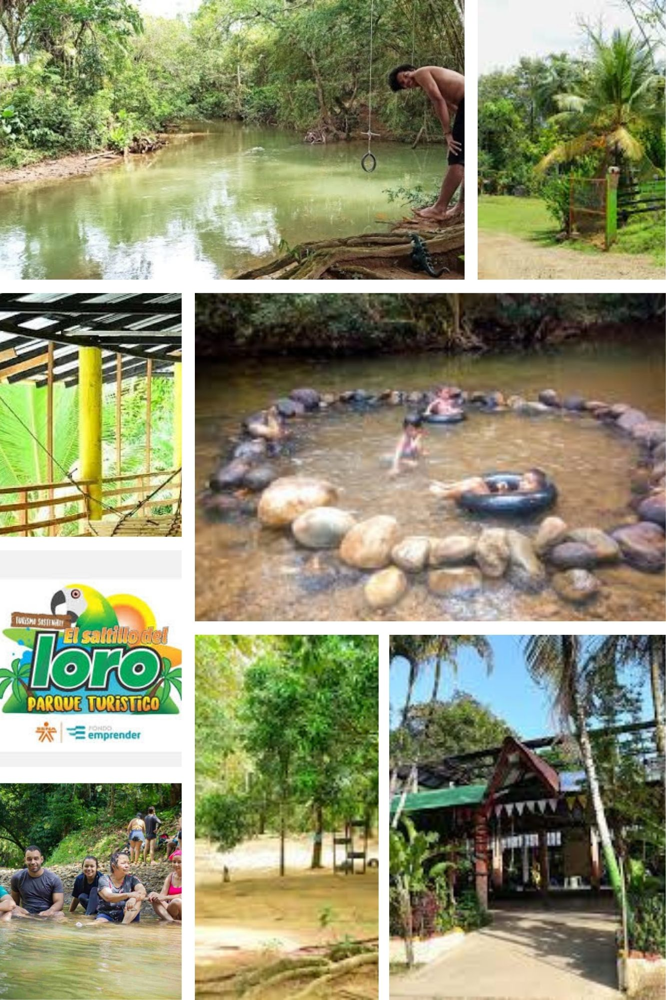
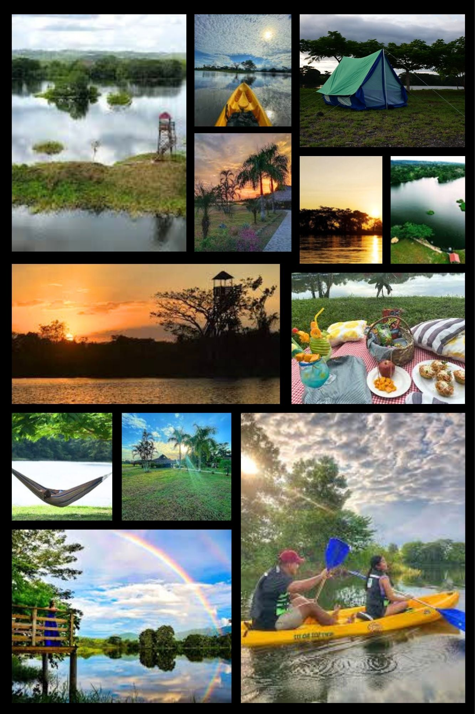
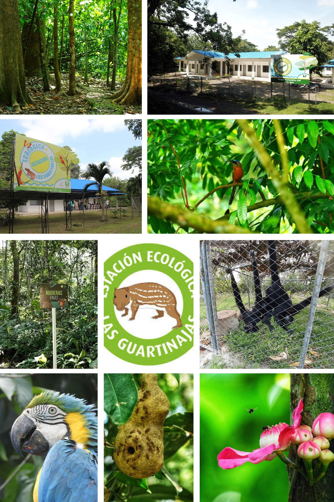

Vive
Tierralta
Inglés
Español
Esta ruta esta diseñada para quienes buscan diversión, actividad física y espacios de integración social, por eso, aquí podrás disfrutar de múltiples actividades del aire libre como deportes, juegos y experiencias acuáticas.
Los destinos incluidos ofrecen zonas para practicar futbol y voleibol, actividades como kayak, paseos en lancha y bicicletas acuáticas, además de espacios para acampar, realizar eventos y participar en talleres educativos sobre la fauna y la flora local.

Este sitio recreativo combina naturaleza y entretenimiento en un solo lugar, ya que, cuenta con un rio ideal para bañarse y compartir con familiares y amigos, además de zonas poco profundas para mayor seguridad.
Dispone de hamacas, áreas de descanso y espacio de juego, también podrás disfrutar de comidas típicas y refrigerios, lo que o convierte en un destino perfecto para pasar un día completo.
Ecolagos es uno de los destinos turísticos más completos de Tierralta, ya que, cuenta con un amplio lago donde puedes realizar actividades como paseos en canoa, lancha, kayak y bicicletas acuáticas.Además, ofrece un mirador, zonas de descanso con hamacas, espacios para picnic, canchas deportivas y áreas para actividades recreativas, también dispone de cabañas, zonas de camping, restaurante, servicios de bebidas y espacios para eventos como bodas, quinceañeros y campamentos, por eso, es un lugar ideal tanto para el descanso como para la diversión.


Este espacio ecológico es ideal para amantes de la naturaleza y el aprendizaje ambiental, ya que ofrece recorridos guiados donde podrás conocer en profundidad la flora y fauna del lugar, además, se realizan talleres educativos que permiten comprender la importancia de la conversación de los ecosistemas. Es un destino perfecto para quienes desean vivir una experiencia enriquecedora, educativa y en contacto directo con el entorno natural.